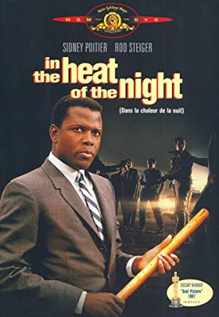
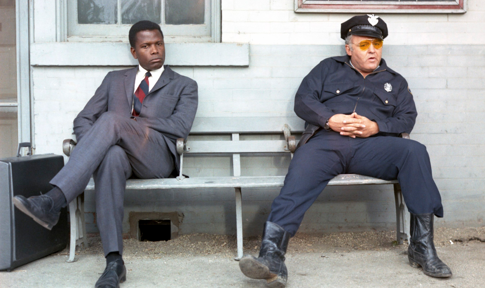

Welcome to the drama page, enjoy from the movies
The weekly movie: In the Heat of the Night
skip the plot and go watch the trailerThe plot:
Wealthy industrialist Phillip Colbert moves to Sparta, Mississippi, to build a factory. Late one night, police officer Sam Wood discovers Colbert's murdered body lying in the street. Wood finds Virgil Tibbs, a Black man with a fat wallet, at the train station and arrests him. Police chief Gillespie accuses him of murder and robbery but soon learns Tibbs is a top homicide detective from Philadelphia, Pennsylvania. Tibbs wants to leave town on the next train, but his boss suggests he stay in Sparta to help with the murder investigation. Though Gillespie, like many of Sparta's white residents, is racist, he and Tibbs reluctantly agree to work together. A doctor estimates that Colbert had been dead for less than an hour when his body was found. Tibbs examines the body and concludes the murder happened earlier than the doctor thought, the killer was right-handed, and the victim had been killed elsewhere and moved to where Wood found his body. Gillespie arrests another suspect, Harvey Oberst, who protests his innocence. The police plan to beat him to extract a confession, but Tibbs reveals Oberst is left-handed and has witnesses to confirm his alibi. Frustrated by the ineptitude of the local police but impressed by Tibbs, Colbert's widow threatens to halt construction of the factory unless Tibbs leads the investigation, so the town's leading citizens are forced to comply with her demand. Tibbs initially suspects the murderer is plantation owner Endicott, a genteel racist and one of the town's most powerful citizens, who publicly opposed Colbert's new factory. When Tibbs interrogates him, Endicott slaps him in the face. Tibbs slaps him back, so Endicott sends a gang of thugs after him. Gillespie rescues him and tells him to leave town to save himself, but Tibbs is convinced he can solve the case.
Tibbs asks Wood to re-trace his patrol car route during the night of the murder; Gillespie joins them. After questioning why Wood partially detours from his patrol route, Tibbs finds that Wood enjoys passing by the house of 16-year-old Delores Purdy, with its bright lights and unobscured windows, to watch her undress. Gillespie discovers that Wood made a sizable deposit to his bank account the day after the murder. He arrests Wood, despite Tibbs's protests that he is not the murderer. Tibbs tells Gillespie that the murder was committed at the site of the planned factory, which clears Wood because he could not have driven both his and Colbert's cars back into town. Also, while being interrogated Wood provides a credible account of where the money for his large deposit could have come from. Delores' brother Mr. Purdy, a hostile local, brings her to the police station and files statutory rape charges against Wood for getting her pregnant. When Tibbs insists on being present during Delores' questioning, Purdy is offended that a Black man is present during her interrogation and soon afterwards gathers a mob to attack Tibbs. Tibbs pressures illegal abortionist Mama Caleba to reveal that she is about to provide an abortion for Delores. When she arrives and sees Tibbs, Delores runs away. Tibbs follows her and confronts her armed boyfriend, Ralph, a cook at a local roadside diner. Purdy's mob also arrives and holds Tibbs at gunpoint. Tibbs tells Purdy to check Delores' purse for the money Ralph gave her for an abortion, which he got from killing and robbing Colbert. Purdy realizes Tibbs is right when he examines the purse. After Purdy confronts him for getting his sister pregnant, Ralph shoots Purdy dead. Tibbs grabs Ralph's gun as Gillespie arrives on the scene. Ralph is arrested and confesses to the killing of Colbert. After hitchhiking a ride with Colbert and asking him for a job, Ralph attacked him at the construction site of the new factory, intending only to knock Colbert unconscious and rob him, but instead accidentally killing him. Tibbs arrives at the station to meet his train to go to Philadelphia, as Gillespie, having carried his suitcase, shakes Tibbs hand and bids him farewell. In the final interaction between Gillespie and Tibbs, as the detective ascends the stairs onto the train, for one last time Gillespie calls out to him and sincerely tells Tibbs to "take care of yourself." Next, after a moment of hesitation, Tibbs turns around to face Gillespie and offers Gillespie a warm smile in reply. Gillespie then smiles back at Tibbs as Tibbs boards the train and as the train pulls away from the station finally bound for Philadelphia.
The trailer for the movie "In the Heat of the Night":